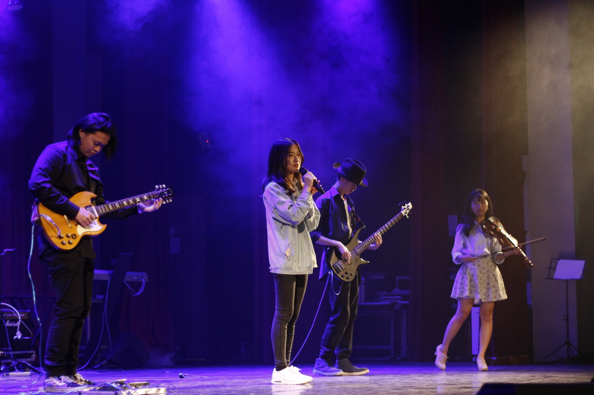
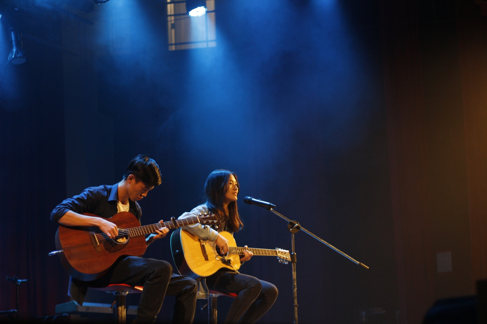
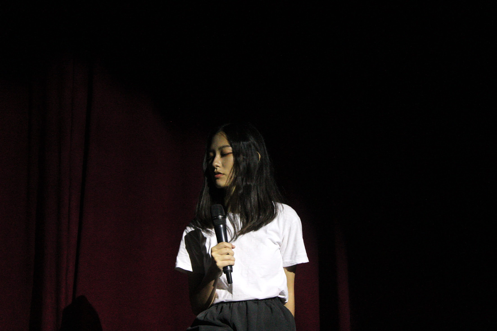
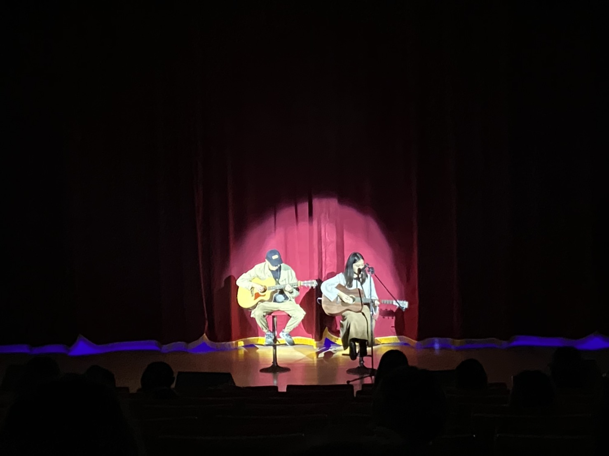
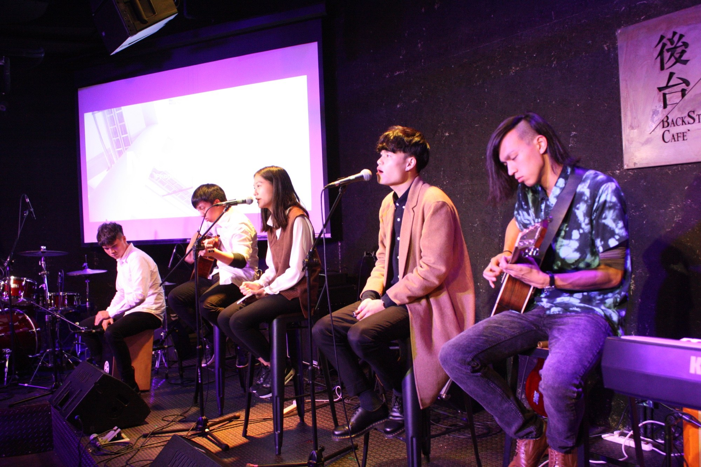
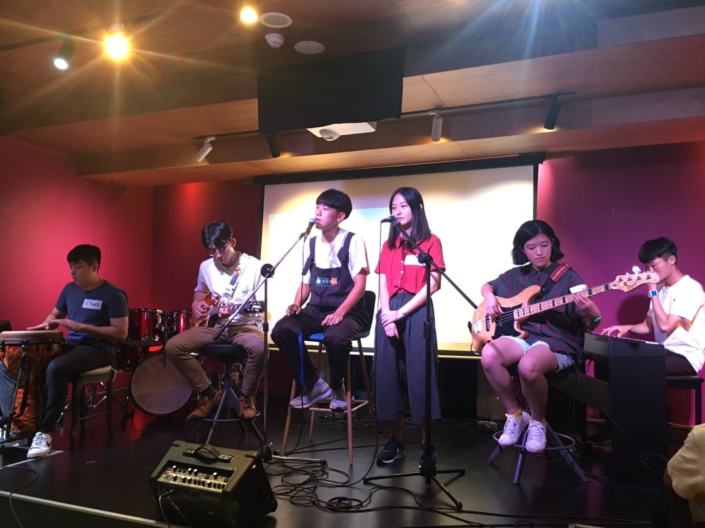
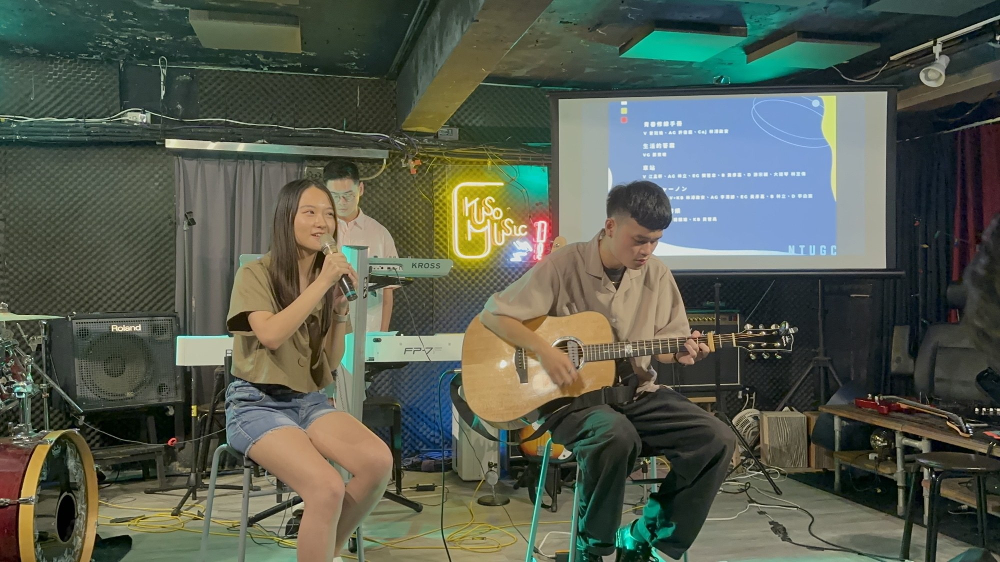
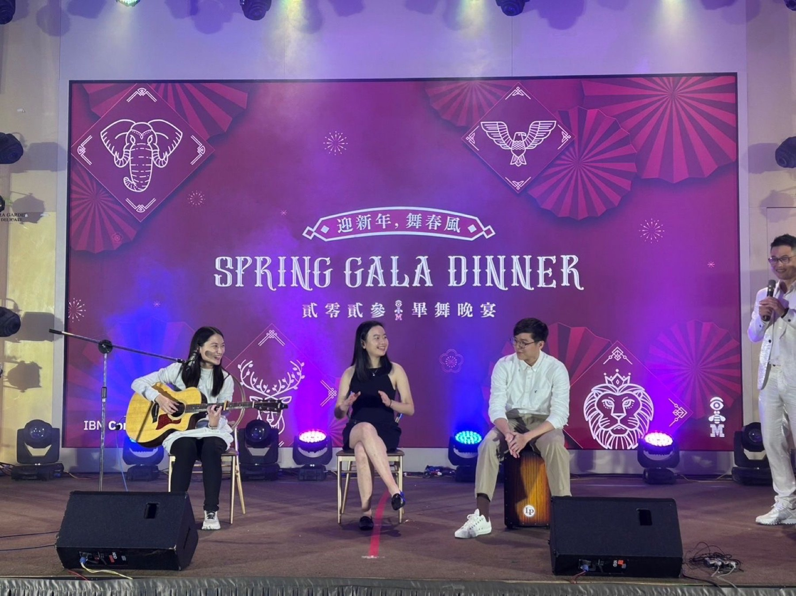

I began singing in an elementary-school choir at six and continued in junior high at thirteen. A high-school band led me to guitar, then to university performance nights and eventually IBM’s Spring Gala. I have now performed publicly for nine consecutive years.
Performance timeline
01
2006–2012 / Elementary-school choir · Taipei
Where my voice began.
I sang in the Taipei Municipal Xisong Elementary School Choir from ages six to twelve. I graduated in 2012 and continued singing in my junior-high choir at thirteen. The Xisong choir regularly placed in national and Taipei-wide competitions. With the elementary-school choir, I performed at Taiwan’s National Concert Hall and took part in a Hakka-language performance at the 21st Golden Melody Awards, Taiwan’s equivalent of the Grammy Awards.
I performed Taylor Swift’s All Too Well with my clubmates at our high-school showcase. It was my first time performing as part of a band. I left wanting to do more than sing: I wanted to accompany myself. That night became the starting point for learning guitar.
At university, I began performing at BICD Night, my department’s annual showcase. For my first show, I had been learning guitar for just six months and doubted I could play onstage. A friend encouraged me to try a guitar duet and patiently practiced with me. When a cold affected my singing that night, I was so disappointed that I thought about giving up. His reassurance helped me through that moment. I continued singing and playing at BICD Night in the years that followed, gradually becoming more comfortable onstage.

2018 · My first BICD Night, performing with a full band.

2018 · Taking a guitar onstage after six months of learning.

2019 · Singing at BICD Night.

2020 · Performing in a guitar duet.
Video archiveBICD Night, 2018–20205 performances
04
NTU Guitar Club / Joined 2018 · Officer 2019–2020
Making music together, on more stages.
I joined NTU Guitar Club in 2018, my second year at university, and found many more opportunities to form bands and get onstage. Rehearsing with fellow members taught me how to prepare a performance together. I also tried accompanying myself on guitar at a members’ showcase, where I received the MVP award. As a club officer from 2019 to 2020, I performed at the welcome concert, Guitar Club Night, and anniversary events. I returned after graduation for the 2023 anniversary.

Performing with fellow club members.

Performing with fellow NTU Guitar Club officers.

Returning after graduation for the 2023 club anniversary.
Video archiveNTU Guitar Club, 2018–2020 & 20239 performances
05
IBM Consulting / Spring Gala
I kept singing after work began.
After joining IBM, I continued performing at the company’s Spring Gala. The audience included more than 800 consultants, partners, and leaders.

2023 / First Spring GalaMy first IBM stage, performing with colleagues.
2024 / Second Spring GalaRed Scarf (如果可以)
2026 / Third Spring GalaAPT.
What I learned onstage.
I did not stop feeling nervous all at once. The nerves simply stopped deciding whether I would perform.
The setting eventually changed from school halls and club shows to IBM’s Spring Gala. Each return made the stage more familiar and left more room to share the song instead of only worrying about mistakes.
At a glance.
Choir
Elementary school: 2006–2012 Continued in junior high at 13